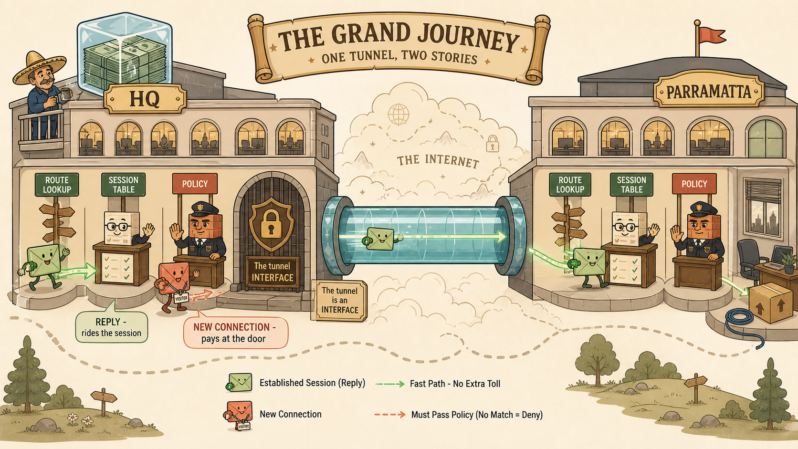
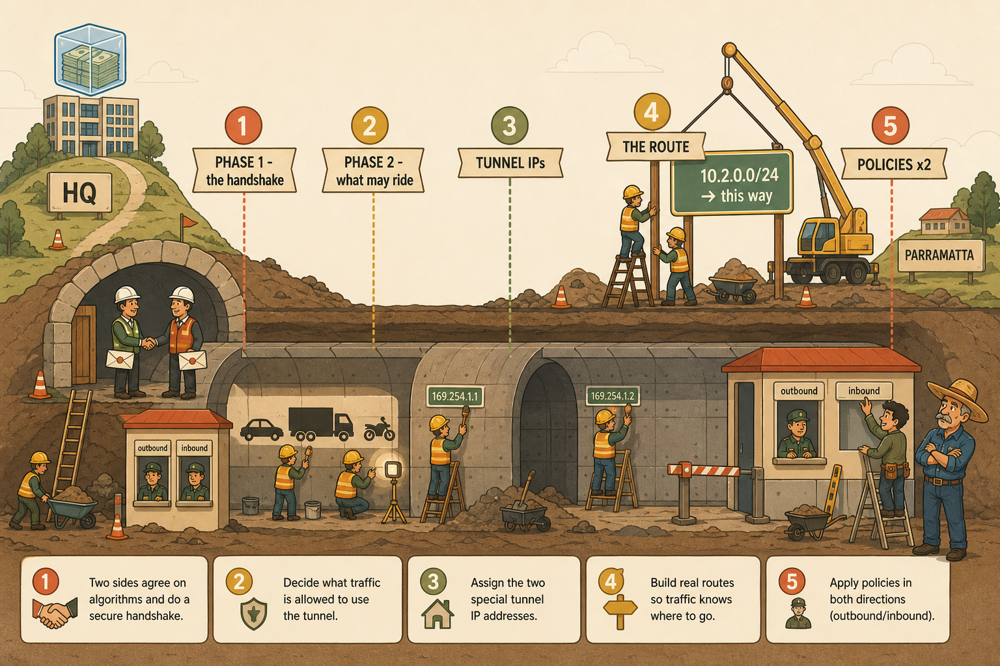
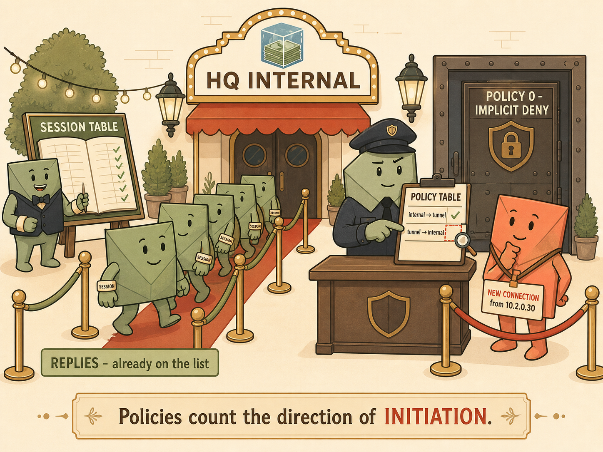
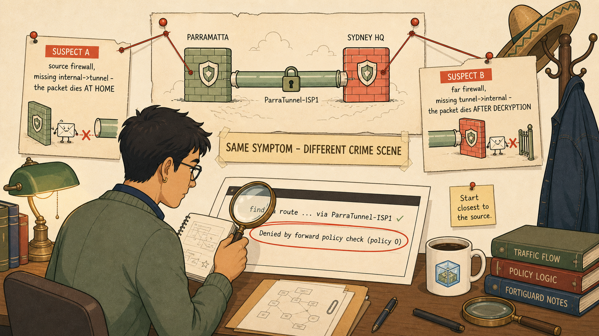
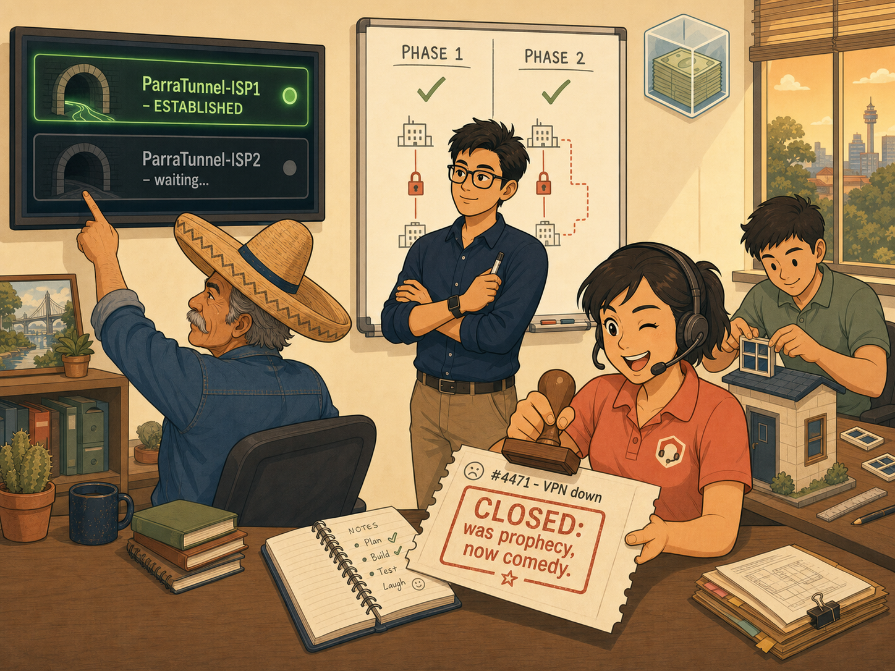

Recommended visual style: PACKET JOURNEY. This session's entire lesson is a story of two travellers — Penny's reply-riding packet and Marcus's doomed new-connection packet — moving through identical checkpoints with different paperwork. A journey format makes the checkpoints (route lookup, session table, policy table, implicit deny) spatially memorable, and the contrast between the two travellers encodes the initiation-vs-reply rule far better than any table. A secondary Troubleshooting Decision Tree visual reinforces the debug method.
Visual 1 — The Grand Journey Map

🗺️
The Tale of Two Packets — Journey Map
ASPECT RATIO 16:9 · HERO IMAGE · PLACE AT TOP
PurposeOne image that holds the whole session: the tunnel as an interface, the five checkpoints, and the two packets' contrasting fates.
Image generation prompt
Flat minimalistic yet highly detailed vector illustration, modern storybook-educational style, cream off-white background, coral and muted-gold accents, sage greens, soft brown outlines, no gradients, no photorealism. A wide side-scrolling "board game" journey map spanning two office buildings connected by a single glowing teal tunnel drawn as a translucent glass pipe across a stylised internet cloud. LEFT building labelled "HQ" bears the LoFinance logo: stacks of banknotes frozen inside an ice cube. RIGHT building labelled "PARRAMATTA", visibly new, with a moving box and a coiled console cable on a desk. Inside each building, the path passes three illustrated checkpoints drawn as small toll gates: a signpost gate labelled "ROUTE LOOKUP" (a wooden signpost pointing at the tunnel mouth), a ledger desk labelled "SESSION TABLE" (an open ledger with green ticked entries), and a security desk labelled "POLICY" staffed by a small guard. Two anthropomorphic packet characters travel the map: a green envelope-character wearing a wristband, cheerfully waved through the ledger desk at HQ (caption chip: "REPLY — rides the session"); and a coral envelope-character wearing a visitor lanyard, stopped at HQ's security desk before an enormous closed gate stamped "POLICY 0 — IMPLICIT DENY" (caption chip: "NEW CONNECTION — pays at the door"). At the tunnel mouth, a small plaque reads "The tunnel is an INTERFACE". A tiny sombrero-wearing engineer observes from a balcony with restrained approval. Clear visual hierarchy, generous spacing, labels in a clean geometric sans-serif, readable as an educational diagram. Must NOT contain: vendor logos, dense CLI text, gloss, 3D rendering, extra characters.
Why this image mattersIt fuses the session's two aphorisms — "the tunnel is an interface" and "replies are free; new conversations pay at the door" — into one scene, so recalling either phrase retrieves the whole model.
Accessibility descriptionA cartoon map of two offices joined by a tunnel; a green envelope with a wristband passes checkpoints easily while a coral envelope with a visitor lanyard is stopped at a gate marked "Policy 0 — Implicit Deny".
Visual 2 — The Five-Item Checklist as a Construction Site

🏗️
Building the Road — Five Layers of a Working Tunnel
ASPECT RATIO 3:2 · PLACE AFTER JOURNEY MAP
PurposeAnchor the build order — and the truth that "the tunnel is the easy part" — as a layered construction scene.
Image generation prompt
Flat detailed vector illustration, storybook-educational style, cream background, coral/gold/sage palette, soft brown outlines, no gradients. A cutaway construction-site cross-section of a road tunnel being built between two hills (labelled "HQ" and "PARRAMATTA", the HQ hill topped with the LoFinance frozen-money ice-cube logo). Five numbered construction crews work in sequence along the tunnel, each with a floating banner: crew 1 "PHASE 1 — the handshake" (two foremen shaking hands at the tunnel entrances, exchanging sealed envelopes); crew 2 "PHASE 2 — what may ride" (workers stencilling allowed-vehicle silhouettes on the tunnel wall); crew 3 "TUNNEL IPs" (a worker screwing small house-number plaques onto the tunnel mouths); crew 4 "THE ROUTE" (a large signpost crew erecting a sign on the HQ hill pointing INTO the tunnel, reading "10.2.0.0/24 → this way"); crew 5 "POLICIES ×2" (two guard booths being installed, one at each end, each with TWO windows labelled "outbound" and "inbound"). Crews 1–2 are small and nearly finished; crews 4–5 are the largest, emphasising that most of the work is outside the tunnel itself. A young overconfident engineer (Junior) proudly installs only ONE window on the far guard booth while a sombrero-wearing senior engineer watches with one raised eyebrow. Clean sans-serif labels, generous spacing, no photorealism, no vendor branding.
Why this image mattersEncodes the checklist order plus its proportions: the failure-prone weight sits in items 4 and 5, and Junior's single-window booth foreshadows the session's fault.
Accessibility descriptionA cutaway tunnel construction scene with five numbered crews; the policy-booth crew at the far end has installed only one of two windows while a senior engineer watches.
Visual 3 — Packet B Wearing a Lanyard

🎟️
Wristbands vs Lanyards — Replies Free, Initiators Pay
ASPECT RATIO 4:3 · PLACE BESIDE THE STATEFUL RULE SECTION
PurposeMake the initiation-vs-travel distinction impossible to forget via the door-of-a-venue metaphor.
Image generation prompt
Flat minimal vector illustration, warm cream background, coral and sage palette, soft brown outlines, storybook-professional tone, no gradients. The entrance of a stylish venue whose marquee reads "HQ INTERNAL" with the LoFinance frozen-money ice-cube logo. Two queues approach one security desk staffed by a calm guard holding a clipboard titled "POLICY TABLE". LEFT queue: green envelope-characters wearing paper wristbands stamped "SESSION", breezing past a separate open ledger stand labelled "SESSION TABLE" where a second attendant happily ticks them through — caption chip: "REPLIES — already on the list". RIGHT queue: a single coral envelope-character wearing a visitor LANYARD labelled "NEW CONNECTION from 10.2.0.30", standing hopefully at the guard's desk; the guard's clipboard shows one row "internal → tunnel ✓" and an empty row where "tunnel → internal" should be, highlighted with a small magnifying glass. Behind the guard, a heavy door stamped "POLICY 0 — IMPLICIT DENY" stands closed. Small footer caption in clean sans-serif: "Policies count the direction of INITIATION." Nothing photorealistic, no extra text blocks, generous negative space.
Why this image mattersThe exam repeatedly tests exactly this discrimination; the wristband/lanyard pairing gives the student a one-glance retrieval cue ("Marcus is Packet B wearing a lanyard").
Accessibility descriptionTwo queues at a venue door: wristband-wearing envelopes pass via a ledger stand while a lanyard-wearing envelope faces a closed door marked "Policy 0" because the guard's clipboard has an empty row.
Visual 4 — The Debug Flow Detective

🕵️
Two Crime Scenes, One Verdict Line
ASPECT RATIO 16:9 · PLACE IN THE TROUBLESHOOTING SECTION
PurposeEncode the two-suspect method and "debug closest to the source" as a detective scene.
Image generation prompt
Flat detailed vector illustration, detective-noir-lite but warm: cream background, muted gold lamplight, coral accents, sage green, soft brown outlines, no gradients, no photorealism. A detective's investigation wall in the LoFinance office (frozen-money ice-cube logo on a coffee mug). Centre: a hand-drawn map of two firewalls joined by a tunnel, with a coral envelope-character's dotted travel line. Two suspect cards pinned left and right with string: card A "SUSPECT A — source firewall, missing internal→tunnel — the packet dies AT HOME" showing the envelope stopped before even entering the tunnel; card B "SUSPECT B — far firewall, missing tunnel→internal — the packet dies AFTER DECRYPTION" showing the envelope emerging from the tunnel then hitting a gate. Between them a banner: "SAME SYMPTOM — DIFFERENT CRIME SCENE". Foreground: a detective figure who is clearly the Intermediate Engineer (competent, focused, small notebook) holding a magnifying glass over a paper printout styled like terminal output with exactly two readable lines: "find a route … via ParraTunnel-ISP1 ✓" and, circled in coral, "Denied by forward policy check (policy 0)". A sombrero rests on the coat stand, its owner just out of frame. A sticky note on the wall reads "Start closest to the source." Clean sans-serif labels, generous spacing.
Why this image mattersRehearses the exact troubleshooting sequence the student performed — enumerate suspects, then let one command's verdict line convict — which is both his season priority and an exam scenario pattern.
Accessibility descriptionA detective wall with two suspect cards (missing policy at source vs destination) and a magnifying glass over a printout highlighting the line "Denied by forward policy check (policy 0)".
Visual 5 — Prophecy or Comedy

🎫
Ticket #4471 — Closing Scene
ASPECT RATIO 4:3 · PLACE AT PAGE END
PurposeEmotional anchor: the story beat that will retrieve the whole session in memory.
Image generation prompt
Flat warm vector illustration, storybook style, cream background, coral/gold/sage palette, soft brown outlines, no gradients. The Parramatta branch office at end of day, golden late-afternoon light through a window. On a wall monitor, a dashboard shows ONE glowing green tunnel entry "ParraTunnel-ISP1 — ESTABLISHED" and directly beneath it a second, dark, dormant entry "ParraTunnel-ISP2 — waiting…", which a sombrero-wearing senior engineer taps thoughtfully with one finger. In the foreground, a help-desk lead with a headset (Riley) gleefully stamps a paper ticket reading "#4471 — VPN down" with a big rubber stamp that prints "CLOSED: was prophecy, now comedy." A young engineer (Junior) in the background carefully adds a SECOND window to a small guard-booth model on the desk, chastened but smiling. The Intermediate Engineer stands centre, arms crossed, quietly satisfied, holding a marker. A whiteboard behind them shows two full columns headed PHASE 1 and PHASE 2 with a tick over each. The LoFinance frozen-money ice-cube logo on the wall. Mood: earned, warm, slightly eccentric; subtle visual tension only in the dark second tunnel entry. No dense technical text, no photorealism, no vendor logos.
Why this image mattersThe dark ISP2 entry is the Session 13 hook ("one road… what happens when there is roadwork?"); anchoring it visually primes the redundancy lesson before it is taught, without teaching it.
Accessibility descriptionAn end-of-day office scene: a closed ticket being stamped, one green tunnel and one dark tunnel on a dashboard, a senior engineer in a sombrero tapping the dark one.